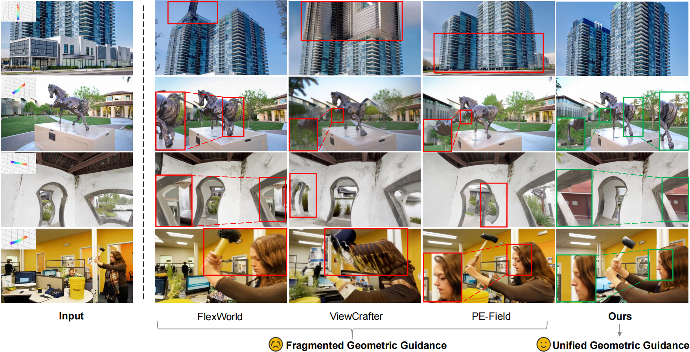
Existing methods relying on fragmented geometric guidance often suffer from structural distortions or artifacts under camera motion (highlighted in red). In contrast, by enforcing unified geometric guidance, our UniGeo successfully preserves global scene geometry and structural fidelity (highlighted in green, with selected details enlarged).
UniGeo enables continuous camera motion. We visualize key viewpoints sampled along the motion axes.
(Note: the parameters in our examples are normalized to a unified scale via VGGT)
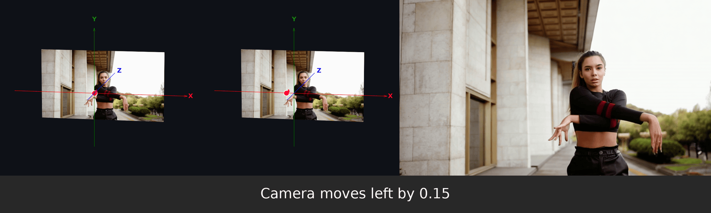
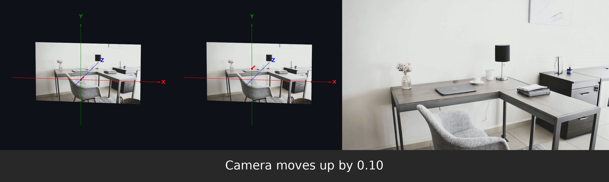
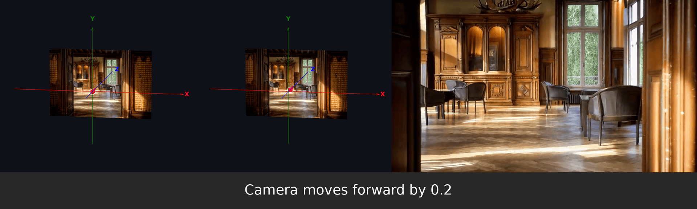
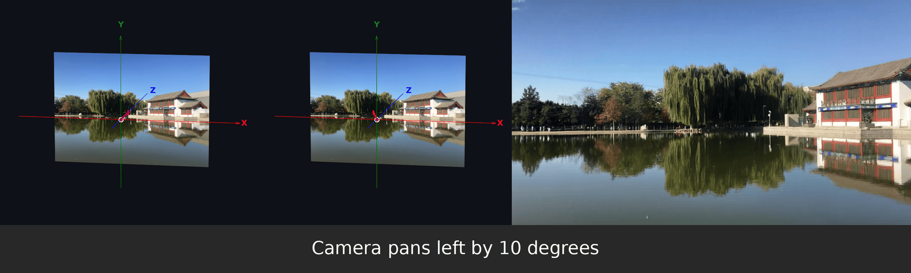
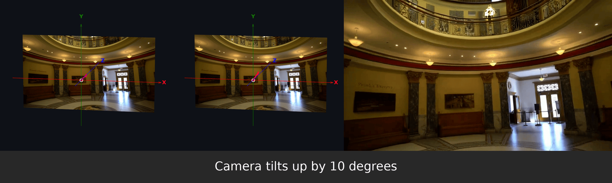
UniGeo enables highly precise camera motion. By inputting specific parameters, the model accurately executes the corresponding viewpoint effects.
(Note: the parameters in our examples are normalized to a unified scale via VGGT)
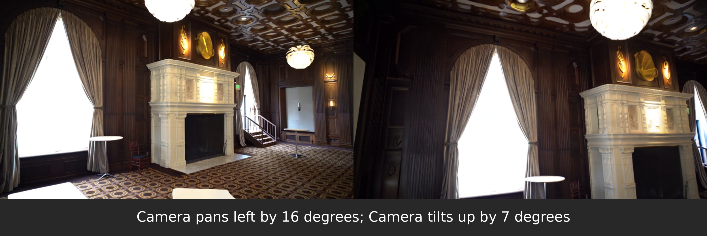
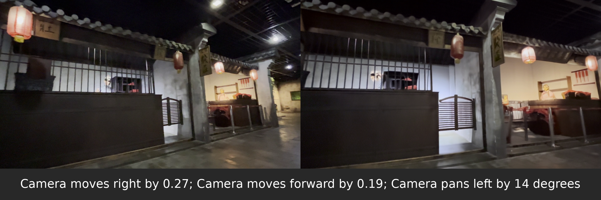
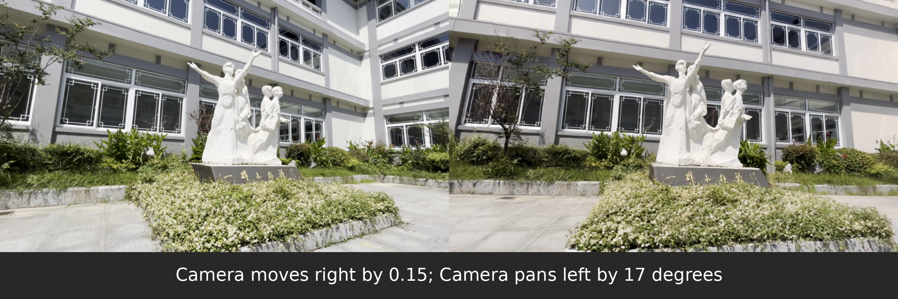
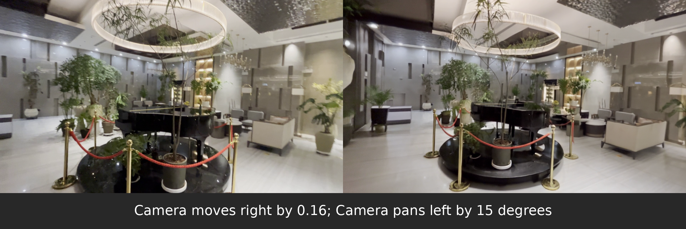
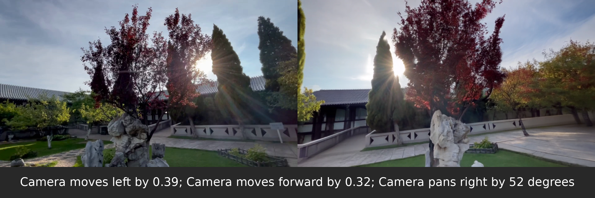
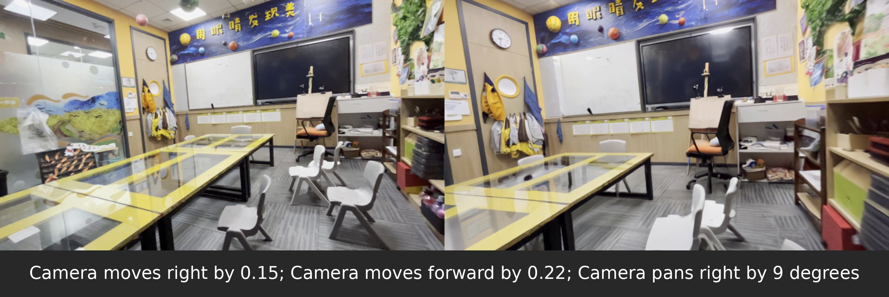
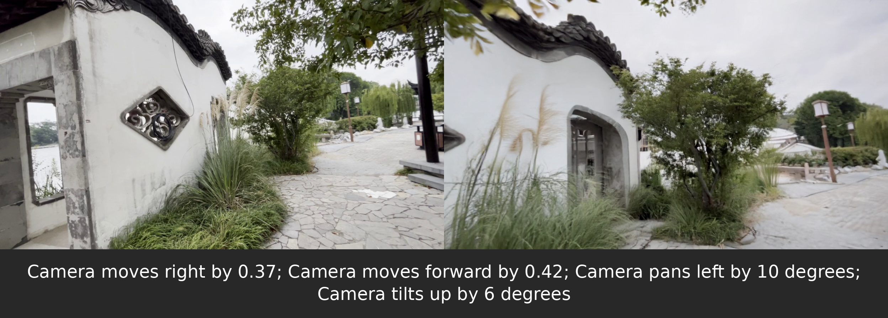
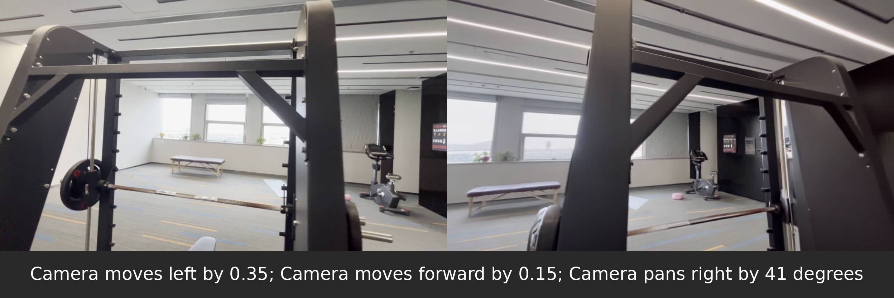
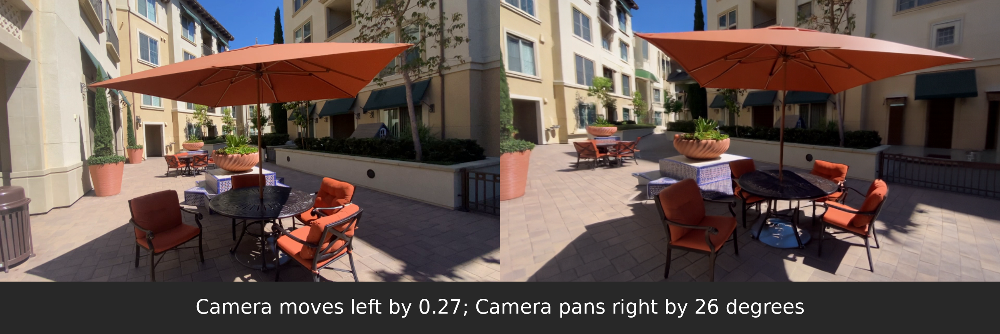
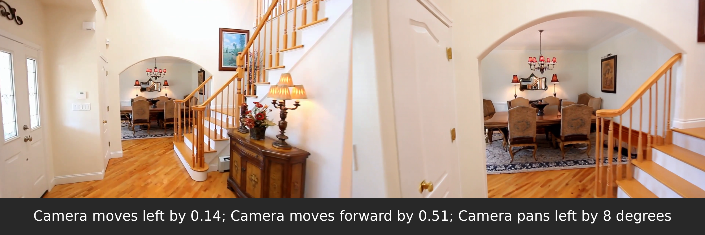
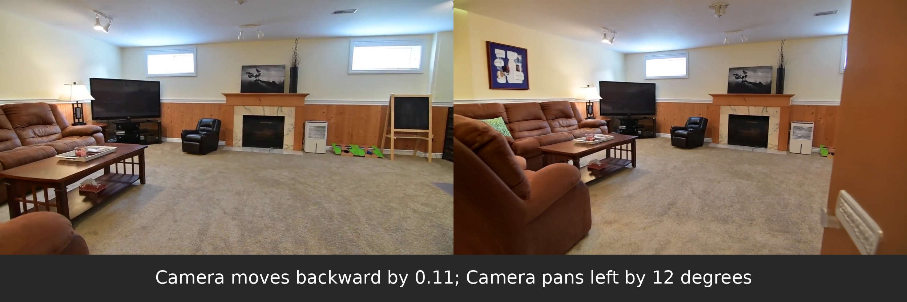
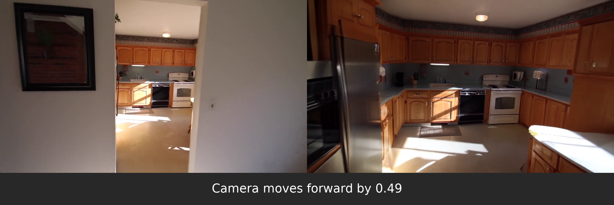
Camera-controllable image editing aims to synthesize novel views of a given scene under varying camera poses while strictly preserving cross-view geometric consistency. However, existing methods typically rely on fragmented geometric guidance, such as only injecting point clouds at the representation level despite models containing multiple levels, and are mainly based on image diffusion models that operate on discrete view mappings. These two limitations jointly lead to geometric drift and structural degradation under continuous camera motion. We observe that while leveraging video models provides continuous viewpoint priors for camera-controllable image editing, they still struggle to form stable geometric understanding if geometric guidance remains fragmented. To systematically address this, we inject unified geometric guidance across the three levels that jointly determine the generative output: representation, architecture, and loss function. To this end, we propose UniGeo, a novel camera-controllable editing framework. Specifically, at the representation level, UniGeo incorporates a frame-decoupled geometric reference injection mechanism to provide robust cross-view geometry context. Furthermore, at the architecture level, it introduces a geometric anchor attention to align multi-view features, and at the loss function level, it proposes a trajectory-endpoint geometric supervision strategy to explicitly reinforce the structural fidelity of target views. Comprehensive experiments across multiple public benchmarks, encompassing both extensive and limited camera motion settings, demonstrate that UniGeo significantly outperforms existing methods in visual quality and geometric consistency.
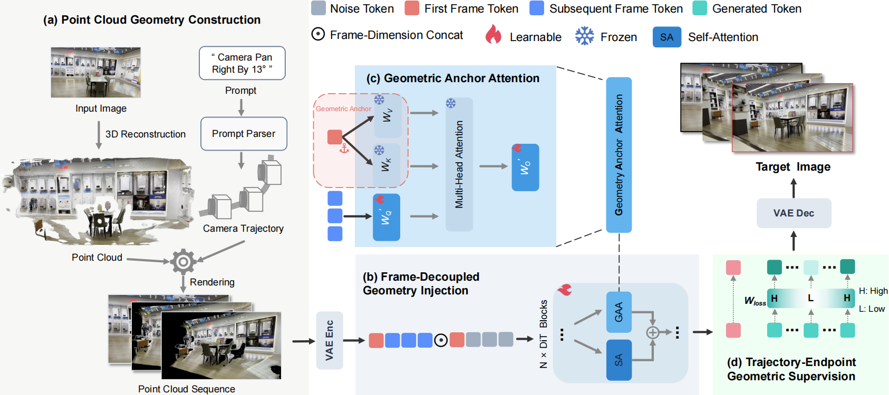
UniGeo incorporates unified geometric guidance through: (a) Geometry Construction: Lifting input images into 3D point cloud sequences. (b) Frame-Decoupled Geometry Injection: Injecting sequences along the frame dimension. (c) Geometric Anchor Attention: Aligning cross-view features using first-frame tokens as anchors. (d) Trajectory-Endpoint Geometric Supervision: Applying higher loss weights to trajectory endpoints versus intermediate frames.
@misc{jiang2026unigeounifyinggeometricguidance,
title={UniGeo: Unifying Geometric Guidance for Camera-Controllable Image Editing via Video Models},
author={Hong Jiang and Wensong Song and Zongxing Yang and Ruijie Quan and Yi Yang},
year={2026},
eprint={2604.17565},
archivePrefix={arXiv},
primaryClass={cs.CV},
url={https://arxiv.org/abs/2604.17565},
}